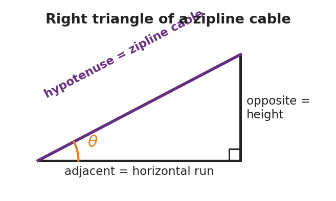

Unit: Math in Science — Lesson 01: Algebra and Trigonometry for Physics
Phenomenon
A zipline cable runs from a tall tower down to a low platform. The installer measured only two things: the cable is 26 m long and it leaves the top at 18° below horizontal. The town inspector now needs two numbers that nobody ever measured — how high is the top tower, and how far across the ground does the rider travel. We are going to get both numbers without climbing anything.

Driving Question
How can we find a height and a distance we can't reach, using only a length and an angle?
Notice & Wonder
Look at the zipline triangle. Write what the installer gave us, what is missing, and what shape the cable makes with the ground and the tower.
Initial Model
Sketch the zipline as a triangle. Label the 26 m cable and the 18° angle. Mark which side is the height of the tower and which side is the ground run. Then write a one-sentence guess for how you might find the height.
Investigate
Drag the angle and hypotenuse sliders. The triangle redraws and the calculator below uses SOH-CAH-TOA to compute the height (opposite) and the ground run (adjacent). Set the angle to 18° and the hypotenuse to 26 m to recover the zipline answer.
Height (opposite) = hyp × sin θ = 0 m · Ground run (adjacent) = hyp × cos θ = 0 m
Make It Make Sense
- Rearrange a = (v − u) / t to solve for v (the final speed).
- A ramp's slanted top is 5.0 m long (the hypotenuse) and tilts 10° above the ground. Which side is the rise — opposite or adjacent to the 10° angle?
- Using question 2, find the rise (height) of the ramp.
Stuck? Sentence frame
"The side I want is ___ the angle, and I was given the ___, so I use ___ (sin / cos)."
Key Vocabulary (max 3)
- isolate (a variable) — to use inverse operations on both sides of an equation until the wanted variable stands alone (e.g., v = d / t → d = v t)
- sine — the trig ratio of the side opposite an angle to the hypotenuse: sin θ = opposite / hypotenuse
- right triangle — a triangle with one 90° angle; its longest side (opposite the right angle) is the hypotenuse
Revise Your Model
Return to your Initial Model sketch. Fill in the actual height and ground run of the zipline, with units. Then rewrite your one-sentence method using the word sine.
Return to the Phenomenon
Give the inspector both numbers in one sentence each, with units. Target: height ≈ 26 × sin 18° ≈ 8.0 m; run ≈ 26 × cos 18° ≈ 24.7 m. Predict: if the cable left the tower at a steeper angle, would the tower be taller or shorter?
Exit Ticket + Closing Reflection
- A wheelchair ramp is 5.0 m long (the slanted hypotenuse) and rises at 10° above the ground.
(a) Rearrange v = d / t to solve for t. (b) Which side of the ramp triangle is the rise — opposite or adjacent to the 10° angle? (c) Find the rise (height) of the ramp. Show the ratio you used. - Reflection: Which felt harder today — rearranging the equation or choosing the trig ratio? Name one thing that made the harder one click.